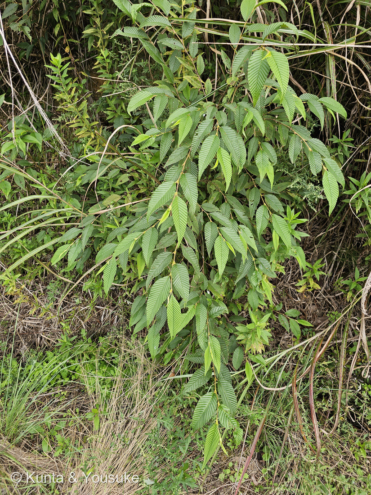
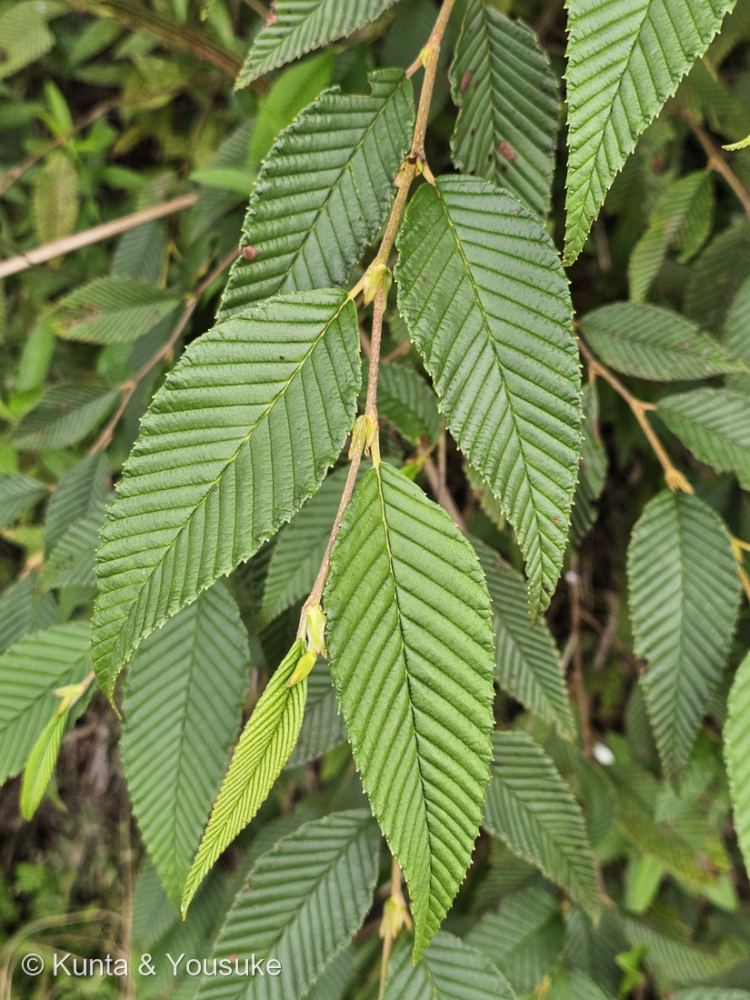
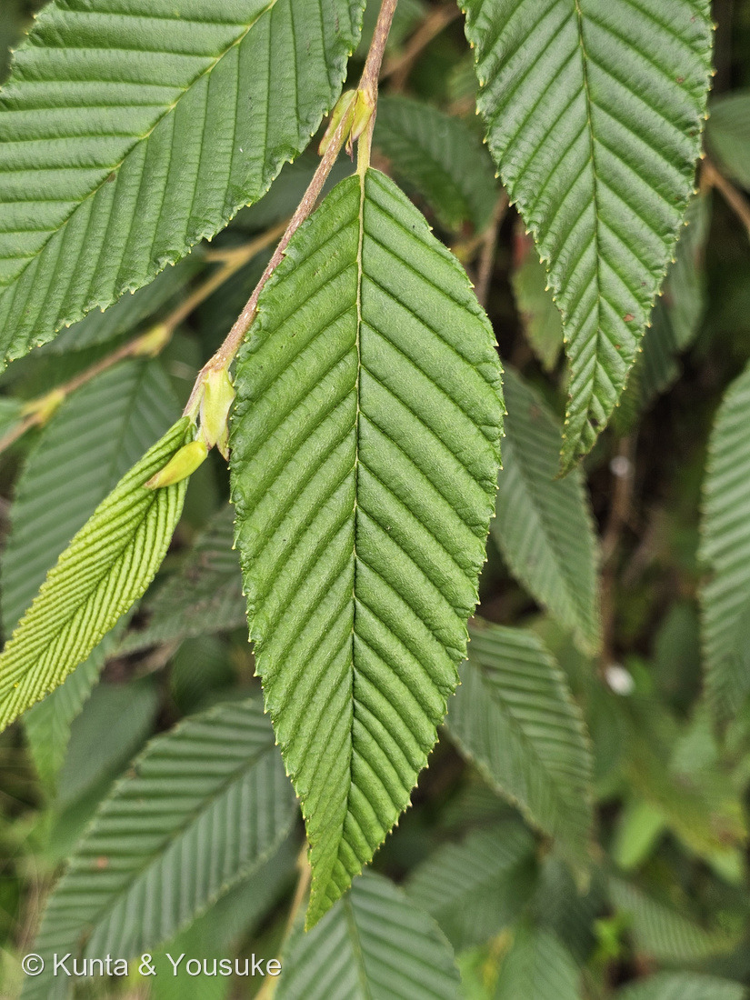
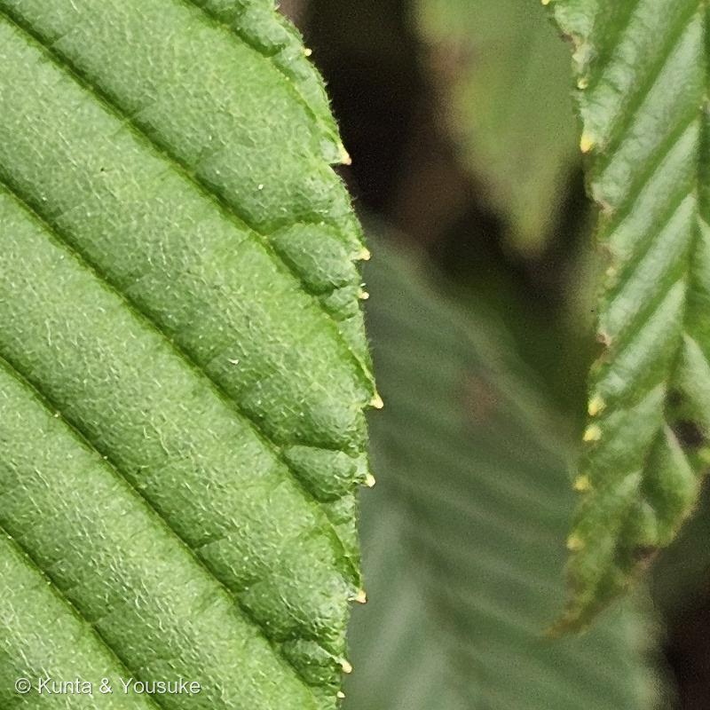
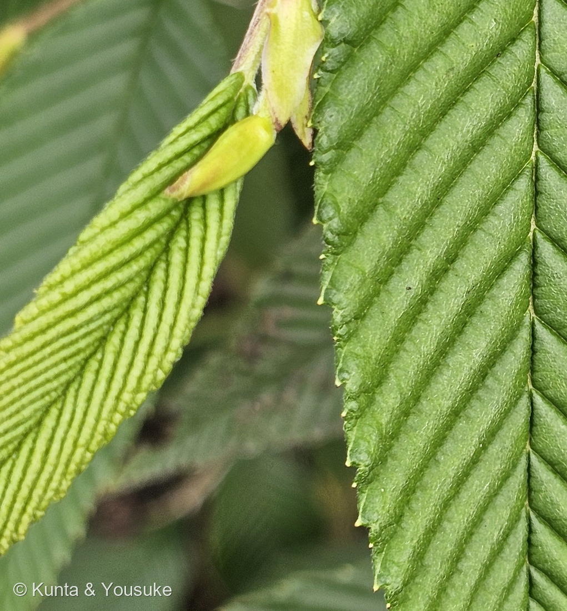

地図を読み込んでいるよ…
🔍 写真も地図も、押しているあいだ拡大して見られるよ（スマホは指を置いてすこし待ってね）。
🌍 の地図＝この子がもともと自生していた場所。──でもこの子は、まだ名前が分からない。名前が分からないと、ふるさとも分からないんだ。だから地図はまっさらのまま、まんなかに「？」を出しておくね。分かったら、ここを塗りに来るよ。
⚠種が決まらないので、地図は「？」＝候補はクマシデ（三河「在来種（日本固有種）本州、四国、九州」）か、ヒメヤシャブシ（三河「在来種 北海道、本州、四国、朝鮮」）＝⭐どちらでも日本の在来種で、本州と四国は共通。⏳実（果苞の穂か球果か）で種が決まったら塗るよ。⚠世羅の花の駅の草むらのふちの若木＝植えられたのか、自然に生えたのかも分からない。
カバノキ科の若木（クマシデかヒメヤシャブシ・同定中）
Carpinus japonica か Alnus pendula（⚠カバノキ科までは確定・種は同定中）
候補 · クマシデ（熊四手）／ヒメヤシャブシ（姫夜叉五倍子） ⭐決め手＝実（果苞の穂か、松かさ形の球果か）と樹皮
カバノキ科 · Betulaceae（クマシデ属 Carpinus か ハンノキ属 Alnus · ブナ目 Fagales）── ⭐⭐⭐⭐⭐図鑑ではじめてのカバノキ科＝114科目／⭐335 クリ・241 クヌギと同じブナ目
燻太さんの言葉「この特徴的な葉脈の走り方は何の植物だろう。まだ幼木のサイズ感だけど、ブナの仲間の雰囲気はするかも。まるで絵に描いたような葉っぱだよね。」── ⭐「ブナの仲間」は惜しい＝同じブナ目の隣の科（カバノキ科）。二重の鋸歯と20対ちかい平行な側脈がその印
⭐⭐⭐⭐ 名前と学名の由来 ── まだ名前が無い子（2つの候補の名前）
- ⚠ この子は、まだ名前が決まっていない。⭐分かっているのはカバノキ科まで＝⭐⭐⭐図鑑ではじめてのカバノキ科＝114科目。⭐科の名前はカバノキ（シラカンバなど）の科＝ハンノキ・シデ・ハシバミもここ。
- ⭐⭐ 候補①クマシデ（熊四手）Carpinus japonica＝「シデ」は神前に捧げる白紙の四手（しで）に花穂が似ていることから（三河 イヌシデ）。「クマ」は大きい・ごついという意味の接頭語（⚠ぼくの読み。三河は「葉が硬く、風にそよぐと音を立てることから」と書くが、これは別名イシシデ・カタシデの由来のようにも読める）。⭐Carpinus＝ラテン語でシデ（hornbeam）、japonica＝日本の（Blume の命名）。⭐日本固有種（三河）。
- ⭐⭐ 候補②ヒメヤシャブシ（姫夜叉五倍子）Alnus pendula＝「ヤシャブシ」は実（球果）がタンニンを含み、五倍子（ふし・虫こぶ）の代わりに染料に使われたことから、「夜叉」はその実のごつごつした姿から、と言われる（⚠語源は一般に言われているもので、今回は一次資料に当たれていない）。「ヒメ」は小さい。⭐Alnus＝ラテン語でハンノキ、pendula＝垂れ下がる＝雌花序と果穂が枝分かれした柄で垂れる（三河「垂れさがる」）。
- ⭐ どちらの名前になるかは、⏳宿題①②③で決まる。
⭐⭐⭐⭐⭐ 燻太さんの「絵に描いたような葉っぱ」── 脈が多くて、歯が二重
- ⭐ 燻太さんの言葉＝「この特徴的な葉脈の走り方は何の植物だろう。まだ幼木のサイズ感だけど、ブナの仲間の雰囲気はするかも。まるで絵に描いたような葉っぱだよね。」
- ⭐⭐⭐ 「ブナの仲間の雰囲気」＝惜しい。──ブナ科ではなくカバノキ科。⭐でも、どちらも同じブナ目＝⭐335 クリや241 クヌギと親戚で、10分まえに撮ったクリの隣人。⭐雰囲気は当たっていた＝「目」まで。
- ⭐⭐⭐ ブナ科と分けたのは2つ＝①⭐⭐⭐ふちの歯が二重（写真④＝脈の先の大きな歯のあいだに、小さな歯が1〜2個）＝クリ・クヌギ・コナラの鋸歯は脈1本に歯1つで、クリ・クヌギは歯の先が刺になる（三河）／②⭐⭐側脈が片側20対ちかく、定規で引いたように平行（写真③）＝クヌギは13〜18対、ブナは7〜12対で波状の鋸歯（三河）＝⭐この密度は、カバノキ科のシデ・ハンノキの顔。
- ⭐⭐ 「絵に描いたような」の正体＝側脈が裏に出っ張り、脈のあいだの葉が少しふくらむ（三河・岡山理科大「側脈は平行で裏面に突出し」）＝⭐葉が波打った板のように見える。⭐写真⑤の若葉を見ると、その理由が分かる＝若葉は脈にそって扇のように折りたたまれて芽の中に入っている＝⭐⭐ひらいたあとも、その折り目が残っている。
- ⭐⭐ 「幼木のサイズ感」＝写真①の株は草むらのふちで、細い枝を垂らして高さ1〜2m＝⭐どちらの候補も本来は10〜15m（クマシデ）／2〜7m（ヒメヤシャブシ）の木（三河）＝⚠ヒメヤシャブシは小高木なので、このサイズはヒメヤシャブシなら大人に近い、クマシデなら子ども。
⭐⭐⭐ この植物のこと ── 2つの候補の暮らし
- ⭐ クマシデ＝落葉高木、高さ10〜15m。丘陵〜山地の谷筋。幹は黒褐色、若木は平滑、成長するとミミズ腫れ状の模様。4月に葉と同時に開花、雄花序も雌花序も垂れ下がる。果穂は5〜10cmで葉状の果苞が密生（三河）。⭐本州・四国・九州の日本固有種（同）。⭐材は硬く、家具・器具の柄に（Wikipedia）。
- ⭐ ヒメヤシャブシ＝落葉小高木、高さ2〜7m。山林・丘陵。樹皮は黒褐色で丸〜横長の皮目が目立つ。3〜5月に雄花序が枝先で垂れ、雌花序は枝分かれした柄の先に3〜6個。果穂（球果）は1.5〜2cmの楕円形で、柄が長く垂れ下がる（三河）。⭐北海道・本州・四国・朝鮮（同）。⭐ハンノキ属は根に根粒菌（フランキア）をもち、やせた土でも育つ（⚠一般に知られていることで、今回の出典には無い）。
- ⭐⭐ どちらも「シデ」「ヤシャブシ」の仲間の中で、脈がいちばん多いグループ＝⭐イヌシデ12〜16対・アカシデ7〜15対・ヤシャブシ12〜16対に対して、クマシデ15〜24対・ヒメヤシャブシ20〜26対（三河・岡山理科大）＝⭐だから写真③の「脈の多さ」は、この2つまでは絞ってくれる。
⚠ 同定について ── 科は確定・種は「実」を待つ
- ⭐⭐⭐⭐⭐ カバノキ科は確定＝重鋸歯・多数の平行な側脈・折りたたまれた若葉・托葉・互生2列（写真②③④⑤）。
- ⚠⚠ 種は2候補＝クマシデ Carpinus japonica（岡山理科大「側脈15〜24対…大きな歯の間に1〜2（3）個の低い鋸歯」＝写真④に近い／三河「葉表は無毛」＝写真③④の細かい毛と合わないかも）／ヒメヤシャブシ Alnus pendula（三河「狭卵形〜披針形・側脈20〜26対・鋭い重鋸歯・基部はやや円形」＝形も脈も合う／岡山理科大がクマシデの「遠目に間違う相手」として名指し）。
- ⭐⭐⭐ 決め手＝実（果苞の穂か、松かさ形の球果か）と樹皮（平滑か、皮目が目立つか）と葉の裏の毛（三河）＝⏳宿題①②③。
- ⭐ 落とした相手＝サワシバ（広卵形・深い心形）／イヌシデ・アカシデ・ヤシャブシ・オオバヤシャブシ（側脈が少ない）／ブナ科（鋸歯が単純・刺）／ニレ科（鋸歯が単純・つけ根が非対称）。
- ⭐ 073の問い＝「その分類群の体のつくりとして、この写真はありえるか」＝⭐ブナ科の葉に二重の鋸歯はありえない→カバノキ科。⭐087の教訓＝「合っている数」ではなく「他を落とせたか」＝⚠クマシデとヒメヤシャブシは、葉だけではどちらも落とせない＝だから名前を決めない。
⏳ 宿題 ── 7つ
- ⏳⭐⭐⭐⭐⭐ ①実を見る＝これで決まる＝果苞の穂（クマシデ）か、松かさ形の球果（ヒメヤシャブシ）か。10〜11月に同じ草むらへ。
- ⏳⭐⭐⭐⭐ ②幹と枝の皮目＝丸〜横長の皮目が目立てばヒメヤシャブシ寄り。
- ⏳⭐⭐⭐ ③葉の裏＝脈上の帯褐色の長毛と、脈腋の毛叢＝クマシデ。
- ⏳⭐⭐⭐ ④4〜5月の花＝雄花序の位置と形。
- ⏳⭐⭐ ⑤側脈を裏から数える＝重なる範囲が広いので参考まで。
- ⏳⭐ ⑥おまけのイヌシデ＝脈を数えくらべ。
- ⏳⭐ ⑦決まったら、名前と地図と索引を直す。
参考：三河の植物観察「クマシデ」（Carpinus japonica Blume／別名イシシデ、カタシデ／英名 Japanese hornbeam／花期4月／高さ10〜15m／丘陵、山地の谷筋／在来種（日本固有種）本州、四国、九州／和名の由来は葉が硬く、風にそよぐと音を立てることから／幹は黒褐色、若木の樹皮は滑らか、成長するとミミズ腫れ状の模様が入り／葉は互生し、長さ5〜10cmの長楕円形、幅がやや狭く、先が尖る。葉の質は薄く、葉脈が深く、裏面に出っ張り、縁は重鋸歯。葉表は無毛、葉裏の脈上には帯褐色の長毛があり、脈腋に毛叢がある／果穂は長さ5〜10cm、葉状の果苞が密生する／サワシバは…クマシデより葉の幅が広く、基部が心形）／三河の植物観察「ヒメヤシャブシ」（Alnus pendula／別名ハゲシバリ／花期3〜5月・果期10〜11月／高さ2〜7m／在来種 北海道、本州、四国、朝鮮／樹皮は黒褐色で、丸〜横長の皮目が目立つ／葉は互生し、長さ5〜10cm、幅2〜4cmの狭卵形〜披針形。葉脈がはっきりし、側脈は20〜26対あり、縁は鋭い重鋸歯。先は尖り、基部はやや円形／果穂（球果）は長さ1.5〜2cmの楕円形、果柄が長く、枝分かれして垂れ下がる／ヤシャブシは葉の幅がやや広く、側脈が12〜16対）／三河の植物観察「イヌシデ」（和名の由来は神前に捧げる、白紙で作られる四手に花穂が似ていることからシデという／側脈は12〜16対／果苞はアカシデより大きく／アカシデは若芽が赤色を帯びる…側脈が7〜15対／サワシバやクマシデは葉の重鋸歯が細かく、果穂の果苞が密につく）／三河の植物観察「サワシバ」（葉は…広卵形、先が急に鋭く尖り、基部は深い心形。側脈は15〜23対）／岡山理科大学 植物生態研究室（波田研）「クマシデ」（クマシデの葉は長さ6〜11cmで細長く、この仲間としては比較的大型。側脈は平行で裏面に突出し、15〜24対もある点が区別点の一つ。葉縁の鋸歯を見ればシデの仲間であることはすぐにわかるが、遠目に見ればヒメヤシャブシと間違うことがあるかもしれない。鋸歯は側脈が突き抜けて突端に終わる飛び出たものの間に1〜2（3）個の低い鋸歯がある（重鋸歯）。表面はほぼ無毛で、裏面は脈上と脈腋に帯褐色の毛がある）／三河の植物観察「クリ」（鋸歯の先が刺状になる／クヌギやアベマキは…鋸歯の先端の刺が針状＝ブナ科を落とすのに）／三河「クヌギ」（側脈は13〜18対／鋸歯の先端に長さ2〜3mmの針状の長い刺）／三河「ブナ」（側脈は平行な直線で、7〜12対…縁には波状の鋸歯）／三河「ケヤキ」（側脈はほとんど枝分かれがなく、鋸歯の先に達する）。